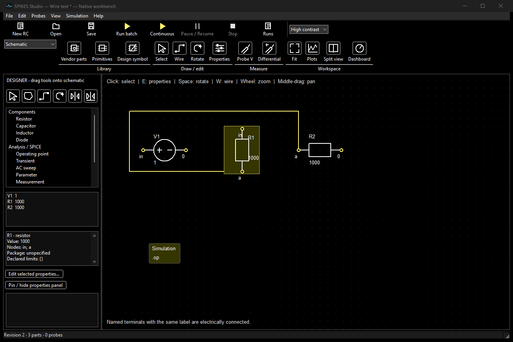
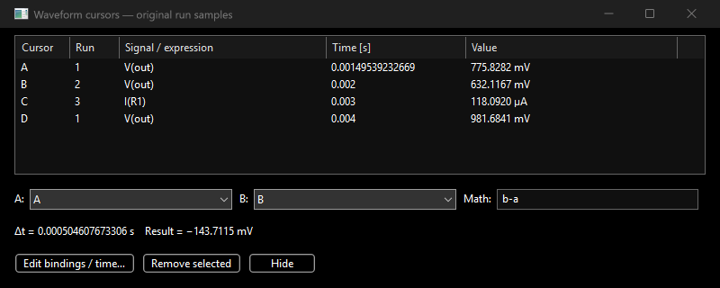
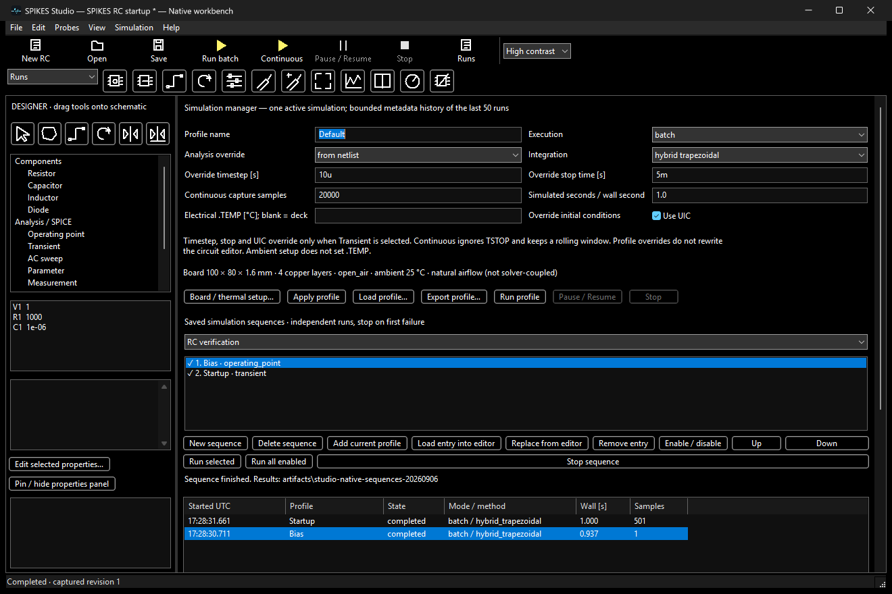

Start with a small, verifiable circuit. These screenshots come from real desktop regression runs, not mockups. Features below describe the development build; older installers may differ.
First simulation | Draw and connect | Measure signals | Sequences | Limits and troubleshooting
W arms wiring. Click a terminal, optional corners, then the destination. Escape cancels. Drag a route to move it while keeping its endpoint pins connected. Rotate with Space or Ctrl+R; properties with E or Ctrl+E. Ctrl+Z undoes. Hover icons for labels.
Equal node labels already mean electrical connectivity. A line crossing alone does not join nets. Filled junction dots currently identify wires meeting at a shared terminal; arbitrary mid-wire branches remain pending.

Probe voltage with P, differential voltage with Shift+P, current with I and power with Shift+I. Use stacked panes for different units. Wheel zooms time; Shift-wheel or the left axis zooms amplitude. Right-click for fit, grid, legends and notes.
Click to place cursors and drag existing cursor lines. The dedicated cursor window retains each signal/run binding. Relative math uses a, b and dt. Measurements use original samples, not display decimation.

Open 05 parameter steps for three independent R values and run overlays. The screenshot above is from the earlier recorded RC qualification fixture, not necessarily the exact initial values in tutorial 05.
Ctrl+J opens the manager. Set a profile, create a sequence and Add current profile. Add an operating point and a transient entry; reorder or disable entries. Run All Enabled asks for an archive folder, runs independent cases in order and stops on failure. Save the schematic to retain the sequence.

Continuous simulation is best effort and has no automatic end, so it cannot be an auto-advancing sequence entry. Specialized AC/noise/Monte Carlo sequence integration remains pending.
The tutorial README covers controller pins, dashboards, recorded sensor inputs, recovery, library exchange and shortcuts. Topic guides in Help document detailed inputs and limitations. Full satellite/EV/solar qualification, battery aging, live microphone/speaker I/O, complete manufacturer libraries and hard-real-time HIL are not represented as finished features.